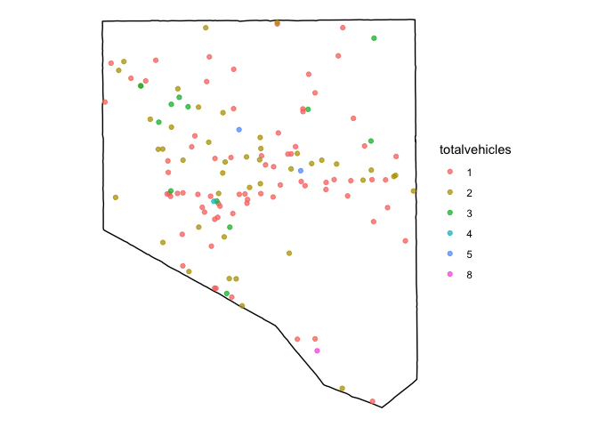

The goal of crashapi is to provides functions for downloading data from the National Highway Traffic Safety Administration (NHTSA) Fatality Analysis Reporting System (FARS) API. The NHTSA website explains the purpose of the API:
The NHTSA Crash data Application Programming Interface (API) provides various ways to get crash data collected by DOT NHTSA’s Fatality Analysis Reporting System (FARS) program. The APIs are primarily targeted for developers, programmers or researchers interested in obtaining Crash statistics on Fatal Motor Vehicle Crashes. The API supports multiple data output formats, namely, XML, CSV/XLSX, JSV and JSON. FARS data starting from 2010 onwards is made available through this website. There are different APIs provided to make it easier to query specific data.
Currently three of the 3 of the 9 query APIs are supported by this package.
You can install the development version of crashapi using the remotes package:
remotes::install_github("elipousson/crashapi")
# Get crashes in NY from 2019 with 5 to 10 vehicles
get_fars_crash_list(
start_year = 2019,
end_year = 2019,
state = "NY",
vehicles = c(5,10)
)
#> CountyName CrashDate Fatals Peds Persons St_Case State
#> 1 BRONX (5) /Date(1549865820000-0500)/ 2 1 7 360042 36
#> 2 ERIE (29) /Date(1551915000000-0500)/ 1 0 4 360159 36
#> 3 ORANGE (71) /Date(1558274040000-0400)/ 1 0 1 360277 36
#> 4 QUEENS (81) /Date(1561656240000-0400)/ 1 0 6 360319 36
#> 5 BRONX (5) /Date(1561866000000-0400)/ 1 0 11 360339 36
#> 6 KINGS (47) /Date(1564564080000-0400)/ 1 0 5 360440 36
#> 7 SUFFOLK (103) /Date(1563792360000-0400)/ 1 0 2 360551 36
#> StateName TotalVehicles
#> 1 New York 5
#> 2 New York 5
#> 3 New York 6
#> 4 New York 5
#> 5 New York 5
#> 6 New York 5
#> 7 New York 6
# Get crashes for Baltimore County, MD from 2014 to 2015
get_fars_crashes(
start_year = 2014,
end_year = 2015,
state = "MD",
county = "Baltimore County") |>
# Show 10 fatal crashes at random
dplyr::slice_sample(n = 10)
#> CITY CITYNAME COUNTY COUNTYNAME CaseYear FATALS LATITUDE
#> 1 0 NOT APPLICABLE 5 BALTIMORE (5) 2014 1 39.38516944
#> 2 0 NOT APPLICABLE 5 BALTIMORE (5) 2014 1 39.37583333
#> 3 0 NOT APPLICABLE 5 BALTIMORE (5) 2015 1 39.68169167
#> 4 0 NOT APPLICABLE 5 BALTIMORE (5) 2015 1 39.36160833
#> 5 0 NOT APPLICABLE 5 BALTIMORE (5) 2015 1 39.51717500
#> 6 0 NOT APPLICABLE 5 BALTIMORE (5) 2014 1 39.40746111
#> 7 0 NOT APPLICABLE 5 BALTIMORE (5) 2015 1 39.26032222
#> 8 0 NOT APPLICABLE 5 BALTIMORE (5) 2014 1 39.39587500
#> 9 0 NOT APPLICABLE 5 BALTIMORE (5) 2014 1 39.44058611
#> 10 0 NOT APPLICABLE 5 BALTIMORE (5) 2014 1 39.41453889
#> LONGITUD STATE STATENAME ST_CASE TOTALVEHICLES TWAY_ID
#> 1 -76.633408330 24 Maryland 240169 1 SR-134
#> 2 -76.513941670 24 Maryland 240281 1 CR-4458
#> 3 -76.730450000 24 Maryland 240058 1 CR-70
#> 4 -76.525191670 24 Maryland 240112 2 CR-3481
#> 5 -76.835450000 24 Maryland 240248 2 SR-30
#> 6 -76.392258330 24 Maryland 240128 1 US-40
#> 7 -76.487916670 24 Maryland 240388 1 JASMINE ROAD ALLEY
#> 8 -76.662855560 24 Maryland 240318 1 SR-25
#> 9 -76.626136110 24 Maryland 240376 2 SR-45
#> 10 -76.592600000 24 Maryland 240103 2 I-95
#> TWAY_ID2 VE_FORMS
#> 1 1
#> 2 1
#> 3 1
#> 4 2
#> 5 CR-187 2
#> 6 1
#> 7 1
#> 8 1
#> 9 CR-810 2
#> 10 2
# Get crashes for Baltimore County, MD from 2014 to 2015
# Set geometry to TRUE to return an sf object
crashes <-
get_fars_crashes(
start_year = 2014,
end_year = 2015,
state = "MD",
county = "Baltimore County",
geometry = TRUE
)
# Map crashes
ggplot() +
geom_sf(data = dplyr::filter(mapbaltimore::baltimore_msa_counties, namelsad == "Baltimore County"), fill = NA, color = "black") +
geom_sf(data = crashes, aes(color = TOTALVEHICLES)) +
theme_void()
# Get summary crash count and fatal crash count data for Maryland from 2010 to 2019
get_fars_summary(
start_year = 2010,
end_year = 2019,
state = "MD"
)
#> CaseYear CrashCounts TotalFatalCounts
#> 1 2010 463 496
#> 2 2011 455 485
#> 3 2012 462 511
#> 4 2013 431 465
#> 5 2014 416 442
#> 6 2015 479 520
#> 7 2016 484 522
#> 8 2017 518 558
#> 9 2018 485 512
#> 10 2019 484 521The NHTSA website provides additional information on the release data and version status for the FARS Dataset.
| Data Year | File Version | Release Date |
|---|---|---|
| 2010 | Final | December 11, 2012 |
| 2011 | Final | November 13, 2013 |
| 2012 | Final | December 12, 2013 |
| 2013 | Final | December 14, 2014 |
| 2014 | Final | December 18, 2015 |
| 2015 | Final | December 16, 2016 |
| 2016 | Final | December 14, 2017 |
| 2017 | Final | December 18, 2018 |
| 2018 | Final | June 24, 2021 |
| 2019 | Annual | June 24, 2021 |